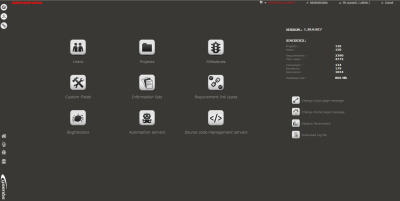
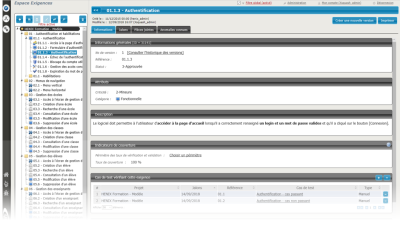
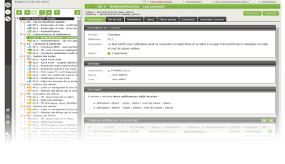
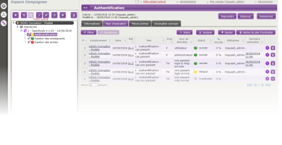
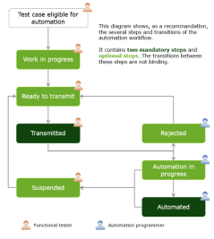

La suite Squash (Software QUality ASsurance enHancement) est un projet Open Source initié par HENIX, qui a pour objet la structuration et l'industrialisation des tests fonctionnels.
Le périmètre du projet Squash recouvre différents domaines de la qualification logicielle
Zoom | Cet espace est accessible par l'administrateur uniquement. Il donne (entre-autres) accès aux fonctionnalités d'administration des :
|
Chaque exigence de test décrit un comportement attendu :
| Zoom |
Zoom | L'espace Cas de test permet de gérer les cas de test, leurs jeux de données ainsi que la liaison entre cas de test et exigences. Selon l'approche du projet, on pourra créer :
|
L'espace Campagnes permet la gestion des campagnes de tests, l'exécution des tests et la remontée des anomalies. Si les tests ont été automatisés, on pourra commander leur exécution depuis cet espace. | Zoom |
Zoom | L'espace automatisation sert à la gestion et au suivi des cas de tests éligibles à l'automatisation. Il offre deux écrans différents selon le profil de l'utilisateur connecté : Automaticien OU Tester Les cas de tests présents se trouvent à des statuts différents selon leur état d'avancement dans le workflow d'automatisation :
|
Lancez Squash
Connectez vous en tant qu'administrateur (admin/admin)
Repérez les différents espaces (exigence, cas de test, campagne, automatisation, administration)
Faites l'inventaire du patrimoine existant